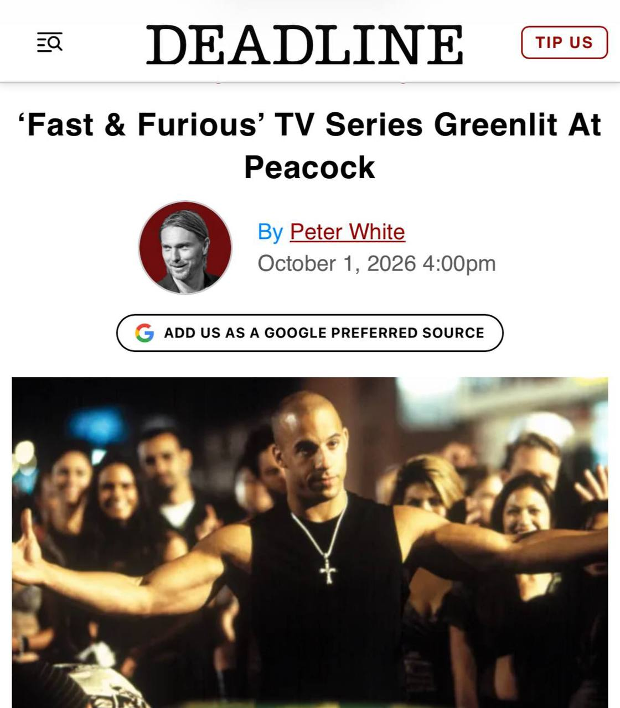

Тачки и Точка
@tachki
Тачки и Точка
@tachki
Культовый Форсаж вернётся в формате СЕРИАЛА проект уже получил одобрение Peacock.

Культовый «Форсаж» вернётся в формате СЕРИАЛА — проект уже получил одобрение Peacock.
За запуск и пилот отвечают Майк Дэниелс и Вулф Коулман. Название, сюжет и актёрский состав пока держат в секрете. Премьеру планируют на 2028 год.
Эта франшиза не закончится никогда.
🚙 Тачки и Точка
За запуск и пилот отвечают Майк Дэниелс и Вулф Коулман. Название, сюжет и актёрский состав пока держат в секрете. Премьеру планируют на 2028 год.
Эта франшиза не закончится никогда.
🚙 Тачки и Точка